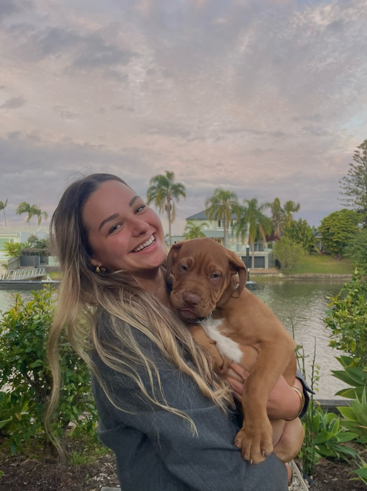
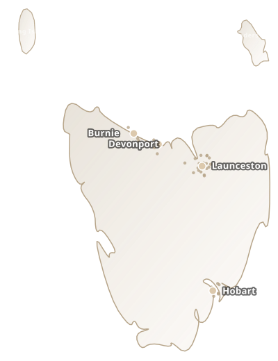

judge credibility by your website alone.
Tasmania
Building Tasmanian Brands That Stand Out.
Branding, websites and AI marketing — built to generate enquiries.
60+Tasmanian clients
5★Reputation
99%Satisfaction
Trusted brands I've worked with
- Nubco
- LeisureRent
- The Star Bar Cafe
- Beadoughs
- Channel 7TASMANIA
- Flex Your 4x4
- Tas Electric Vehicle
- Australian Radio Network
- Triple M Radio
- Channel 10
- McCarthy's Bread Lounge

Founder
Raquel Cuevas
Founder & Lead Strategist
Sydney-born. University of Sydney Commerce graduate. Former founder who built and exited multiple online businesses.
She returned to Tasmania to give local business owners mainland-calibre brand strategy — without the agency fluff.
The Problem
Customers decide in three seconds.
Outdated website
Signals an outdated business.
Inactive social
Silence reads as closed.
Weak reviews
Stars decide who gets the call.
Competitors win
Polished brands take the enquiry.
Services
One partner. Complete brand infrastructure.
01
Brand Development
Positioning and identity that earns trust before the first conversation.
Strategy · Visual identity · Messaging
02
Website Design
Fast, premium, built to convert visitors into enquiries.
03
Social Media
Consistent presence that builds authority and keeps you top of mind.
04
Content Creation
Photography, video and copy that showcases your work authentically.
05
AI Implementation
Systems optimised for modern discovery — Google, ChatGPT and beyond.
06
Review Strategy
Structured reputation management that influences buyers at the decision point.
How We Grow Businesses
From invisible to indispensable.
Visibility
Trust
Enquiries
Customers
Referrals
Growth
Get found where customers search.
Local Advantage
Built In Tasmania.
Built In Tasmania.
Designed To Compete Anywhere.
We're based here — not watching from the mainland. That means strategy shaped by how Tasmanians actually search, buy, and refer.
- Local market knowledge across Hobart, Launceston, and the North-West Coast
- Seasonal campaigns aligned to tourism peaks and trade quiet periods
- Brand positioning that wins locally and holds up nationally

Client Results
Measurable outcomes.

+340%
Coastal Electrical
Rebrand and website rebuild. Enquiries tripled in 90 days.
Trades · HobartThe Harbour Room
3.8 → 4.9 stars in six months.
HospitalityWilderness Trail Co.
Bookings surged ahead of peak season.
TourismReady To Build A Stronger Brand?
30-minute strategy call. No obligation.
- Direct access to Raquel
- Response within one business day
FAQ
Common questions.
Why does marketing matter in Tasmania — and how can Facebook help?
Research shows that over 90% of consumers research a business online before making a purchase, and nearly 8 in 10 Australians trust online reviews as much as personal recommendations. For most businesses, customers will visit your website, Google profile, or Facebook page before they ever contact you.
Good marketing helps build trust before the first conversation even happens — and Facebook remains one of Australia's most-used platforms for local customers, particularly homeowners, decision-makers, and everyday consumers.
Consistent Facebook content helps:
- Keep your business visible
- Build trust with potential customers
- Showcase your work and expertise
- Generate enquiries
- Support referrals and word-of-mouth marketing
The businesses people see regularly are often the businesses they remember when they're ready to buy.
Do I need a website if I already have Facebook?
Yes.
Facebook creates awareness.
Your website converts that attention into enquiries.
Research shows that 75% of consumers judge a business's credibility based on its website.
A professional website helps build trust, improve Google visibility, answer customer questions, and generate leads 24/7.
What is an AI-optimised website?
An AI-optimised website is designed to be easily understood by Google, ChatGPT, Gemini, and other AI-powered search tools.
As more people use AI to find products and services, businesses need websites that are structured correctly to appear in these results.
It's the next evolution of SEO.
Can AI help my business?
Absolutely.
Recent studies show that businesses using AI can significantly improve productivity by reducing repetitive tasks and improving customer response times.
We help businesses implement practical AI tools for customer enquiries, website chatbots, content planning, and operational efficiency.
Steps to working with RC Marketing
We keep things simple.
First, we'll meet with you to learn about your business, goals, customers, and challenges.
If we're both confident we're a good fit, we'll develop a strategy and can usually begin working together within 2–3 business days.
You'll always know what's happening, what we're working on, and why.
Does your team visit our business to create content?
Yes.
One of the biggest advantages of working with a local Tasmanian team is that we visit our clients every 2–4 weeks to capture fresh content.
This allows us to showcase your people, projects, customers, and business in an authentic way while keeping your content current and engaging.
How long does it take to see results?
Marketing is a long-term investment, but many clients notice improvements in visibility, engagement, enquiries, and customer perception within the first couple of months.
The strongest results come from consistency.
Just like building a reputation, strong marketing compounds over time.
Do you work with businesses outside Tasmania?
Yes.
While we're proudly based in Launceston and passionate about supporting Tasmanian businesses, we also work with businesses across Australia using modern systems and remote collaboration tools.